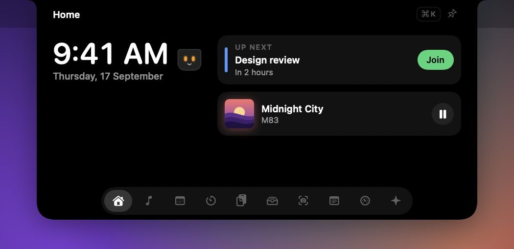
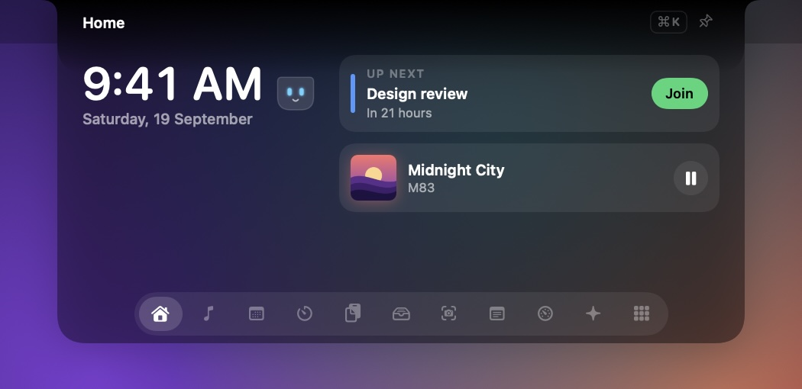
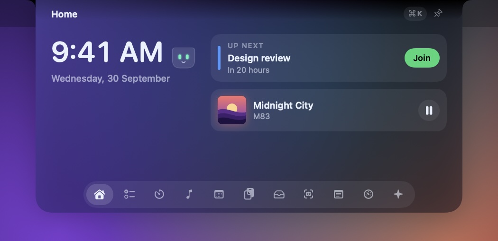

Xotch
Your MacBook's notch, put to work.
To-dos, screenshots and screen recordings, music, calendar, timers, your clipboard and Claude Code — all one hover away.

Quiet until you need it
It lives in the notch and stays out of the way
Move the pointer to the notch and it grows a little. Keep it there and it opens. Click, and it stays open until you press Esc.
Live, right beside the camera
Small things happen without opening anything
When something's running, the notch grows two little "ears" to show it. If more than one thing is live, the most important shows and dots count the rest.


To-dos
Today's list, in the notch
Today's to-dos, and a someday list for the rest.
- Type one straight into the notch, or press ⌘K anywhere and say what you're doing.
- Right-click to move a to-do to today, tomorrow or someday.
- Unfinished to-dos carry over instead of quietly disappearing.

Capture
Screenshots and recordings, without leaving the notch
Grab an area, a window or the whole screen, or record your screen with sound. Everything lands on a shelf in the notch, ready to drag into a message.
- Your ⌘⇧3, ⌘⇧4 and ⌘⇧5 screenshots turn up on the same shelf.
- Screenshots copy themselves to your clipboard.
- Recording needs macOS 15; screenshots work everywhere.

Everything else
The things you reach for, in one place


Make it yours
Three themes, or build your own
Pick the background, text, accent and glow. The closed notch always stays black, so it blends into the camera housing.



One shortcut for everything
Press ⌘K in the open notch and type: cal to open Calendar, 10 min to start a timer, shot to take a screenshot, pause for the music — or anything else, and it becomes today's to-do.

Private by design
Nothing leaves your Mac. Nothing, at all.
- No network requests. Xotch has no server, no account and no analytics. It doesn't connect to anything.
- Your data stays put. Clipboard history, notes, to-dos, captures and shelved files live in one folder on your Mac.
- Permissions are asked for in context — Calendar when you open Calendar, Screen Recording at your first screenshot — and never at launch. Xotch never asks for Accessibility or Input Monitoring.
- Crash reports are never sent automatically. If you keep them, you decide whether to email one.
Private beta
Try it before it ships
Xotch is in private beta while it's signed and notarised. Testers get the build, the changelog, and a direct line for anything that breaks.
Ask for an invite- Unzip the download and drag Xotch to Applications.
- Open it. While beta builds are unsigned, macOS asks you to allow it once in Privacy & Security.
- Move the pointer to the notch. Xotch lives in the menu bar and has no Dock icon.
Needs macOS 14 Sonoma or later, on Apple silicon or Intel. Best on a MacBook with a notch — other displays get one drawn for them. Liquid Glass needs macOS 26; screen recording needs macOS 15.